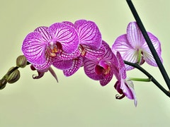
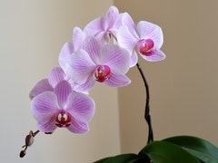
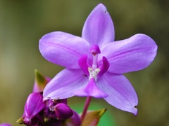

Фаленопсис относится к роду Орхидных. Орхидея, как самостоятельный вид был впервые изучен ботаником Карлом Риттером фон Блюменом в далеком 19 веке. Эти растения обитают в сырых равнинах и высоких лесах Северной Австралии, Филиппинах и Южной Азии. Отличительные особенности этих цветов можно раскрыть по их длинноватому стеблю с четырьмя большими листьями, расположенными двумя рядами
Галерея цветов


